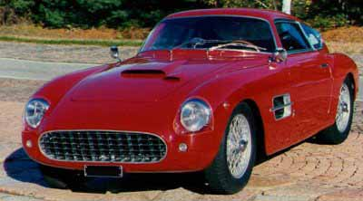
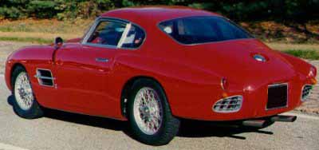
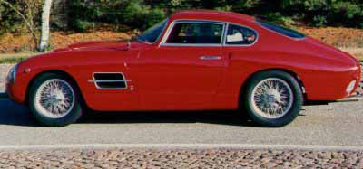
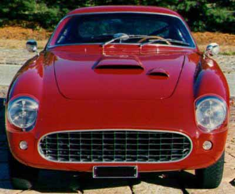
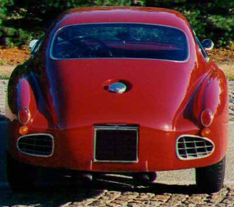
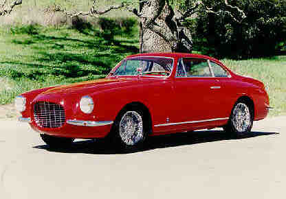

Carrozzeria Vignale · Fiat
195x Fiat 8V Vignale





History Fiat 8V
This great sports car was the first series built Fiat with an eight cylinder motor; it also has independent four wheel suspensions and these represent the strongpoint of this car which was famous for its excellent road holding. The cars built after 1954, 2 in all, had their coachwork made entirely of plastic, which was greatly discussed, as for the previous model, due to the shape. 114 cars were built, only 14 more than required at the time for ratification in the Gran Turismo category. It was an excellent advertisement for Fiat thanks to victories in many competitions against valid opponents and its victory in the Italian Championship in 1954. This car was designed by a small group of people in a department of Fiat which did not really seem to be part of Fiat and it was produced from 1952 to 1954. Motor power was originally 105 hp and then increased to 115 hp. The racing versions reached 130 hp. The cars done by Siata were famous. Many other coachbuilders worked on this chassis, like Zagato and Vignale. Zagato made one of the most beautiful spiders even built. It was actually Zagato’s berlinetta which won its class in the Mille Miglia. This car, because of its aerodynamic characteristics designed and built by Zagato, was launched at the Geneva Car Show in 1952 with the slogan «designed by the wind».
Motor: 8 cylinder 90 degree «V». Total Cylinder Capacity: 1996 cc. Horse Power: 115 at 6000 rpm. Maximum Speed: 200 km/hr. Feed: induction. Chassis/Coachwork: tubular.
Other Fiat 8V’s
- www.zarattini.com
- www.zagato-cars.com
- www.ktsmotorsportsgarage.com
- 8V designed by Savonuzzi (formerly with Cisitalia)
- 1953 Fiat 8V Supersonic
Kruse International — Auction Results: Las Vegas, NV
1954 FIAT VIGNALE COUPE, V-8, RED, 1954 FIAT 8V VIGNALE COUPE. OTTO VU IS STILL A TERM ITALIAN AUTOMOBILE ENTHUSIASTS SPEAK ABOUT WHT GREAT AFFECTION. AND WHEN THEY DO, THEY ARE SPEAKING ABOUT THE 8V. FIAT STUNNED THE AUDIENCE AT THE 1952 GENEVA AUTO SHOW WHEN THEY INTRODUCED THE COMPANY’S FIRST V-8 ENGINE IN A NEW RACING MACHINE DEVELOPED FROM THE GROUND-UP. ONLY 114 WERE BUILT AND THEY WERE SHIPPED TO A WHO’S WHO LIST OF ITALY’S GREAT COACHBUILDERS: ZAGATO, GHIA, AND VIGNALE, THE DESIGNER OF THIS COUPE. THESE CUSTOM-BUILT 8V’S, WITH THEIR SMALL TWO LITRE ENGINES, ARE CONSIDERED BY MANY TO BE THE BEST PERFORMING AND THE MOST BEAUTIFUL POST WAR FIATS.

Vehicle Condition: 3, Lot No.: 474, Highest Bid: $170,000 — SOLD